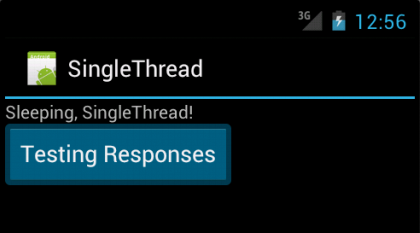
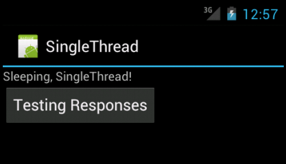
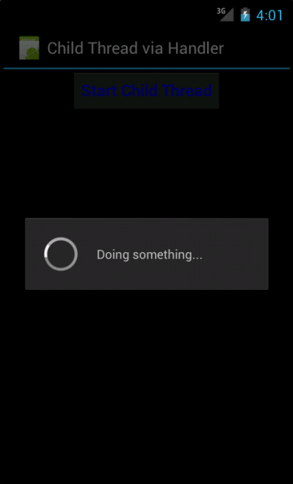

<!DOCTYPE html>

<!-- Mirrored from www.bogotobogo.com/Android/android22Threads.php by HTTrack Website Copier/3.x [XR&CO'2014], Mon, 11 Dec 2017 15:25:56 GMT -->
<head>
  <title>Android 4 - Threads - 2017</title>
  <meta content="Android and Eclipse Tutorial - Threads" name="description" />
  <meta content="Android, Eclipse, Tutorial, Threads, Handler, AsyncTask" name="keywords" />
  <meta name="viewport" content="width=device-width, initial-scale=1">

  <link href="http://netdna.bootstrapcdn.com/bootstrap/3.0.0/css/bootstrap.no-icons.min.css" rel="stylesheet">
  <link href="http://netdna.bootstrapcdn.com/font-awesome/4.0.3/css/font-awesome.css" rel="stylesheet">
  <link rel="stylesheet" href="http://fonts.googleapis.com/css?family=Alice|Open+Sans:400,300,700">
  <link rel="stylesheet" href="../public/css/app.css">
  <link rel="stylesheet" href="../public/css/styles.css">
  <link rel="stylesheet" href="../public/css/bogostyleWidePreNew.css">
</head>

<body class="home">
    <nav class="navbar navbar-default navbar-fixed-top">
    <div class="container-fluid">      
      <div class="navbar-header">
        <!--<button type="button" class="navbar-toggle collapsed" data-toggle="collapse" data-target="#navbar" aria-expanded="false" aria-controls="navbar"> -->
        <button type="button" class="navbar-toggle collapsed" data-toggle="collapse" data-target=".navbar-collapse" aria-expanded="false" aria-controls="navbar"> 
          <span class="sr-only">Toggle navigation</span> 
          <span class="icon-bar"></span> 
          <span class="icon-bar"></span> 
          <span class="icon-bar"></span> 
        </button>
        <a class="navbar-brand" href="../index-2.html">BogoToBogo</a>
      </div>
      
      <div class="navbar-collapse collapse">
        
        <ul class="nav navbar-nav">
          <li class="active"><a href="../index-2.html">Home</a></li>
          <li><a href="../about_us.html">About</a></li>
          <li><a href="../Hadoop/BigData_hadoop_Install_on_ubuntu_single_node_cluster.html">Big Data</a></li>
          <li><a href="../python/scikit-learn/Artificial-Neural-Network-ANN-1-Introduction.html">Machine Learning</a></li>
          <li><a href="../AngularJS/AngularJS_Introduction.html">AngularJS</a></li> 
          <li><a href="../python/pytut.html">Python</a></li>
          <li><a href="../cplusplus/cpptut.html">C++</a></li>
          <li><a href="../DevOps/DevOps_Jenkins_Chef_Puppet_Graphite_Logstash.html">DevOps </a></li>
          <li><a href="../Algorithms/algorithms.html">Algorithms</a></li> 
          <li class="dropdown">
            <a href="#" class="dropdown-toggle" data-toggle="dropdown">More...<b class="caret"></b></a>
            <ul class="dropdown-menu">
           
              <li><a href="../Qt/Qt5_Creating_QtQuick2_QML_Application_Animation_A.html">Qt 5</a></li>                           
              <li><a href="android.html">Android</a></li>
              
              <li><a href="../Linux/linux_tips1.html">Linux</a></li>
              <li><a href="../Java/tutorials/on_java.html">Java</a></li>
              <li><a href="../CSharp/.netframework.html">CSharp</a></li>
              <li><a href="../VideoStreaming/videostreaming_etc.html">Video Streaming</a></li>
              <li><a href="../FFMpeg/ffmpeg_fade_in_fade_out_transitions_effects_filters_slideshow_concat.html">FFmpeg</a></li>
              <li><a href="../Matlab/Matlab_Tutorial_Manipulating_Audio_I_Reverse_Delay_Tone_Control_Changing_Speed_Removing_Vocals.html">Matlab</a></li>
              <li><a href="../python/Django/Python_Django_Forums_Shared_Host.html">Django 1.8</a></li>
              <li><a href="../Laravel5/Laravel5_ToDo_List_Sample.html">Laravel 5.2</a></li>
              <li><a href="../RubyOnRails/RubyOnRails.html">Ruby On Rails</a></li>
              <li><a href="../HTML5/HTML5_Tutorial.html">HTML5 & CSS</a></li>
              <li><a href="../AmazingPlaces/index.html" target="_blank">
Earth</a> </li>
            </ul>
          </li>
        </ul>      
      </div>
    </div>  
  </nav>  

  <div id="main">
    <div class="container">
      <div class="row section featured topspace">
        <div class="row">
          <div class="col-sm-9 col-md-9 col-xs-9">
            <h2 class="section-title">Android 4
22. Threads and AsyncTask        <g:plusone></g:plusone></h2>
            <div class="icon-image">
               
            </div>
            <div class="SocialLinks">
  <span class='st__large' displayText=''></span>
  <br><br>
  <div align="center">
  <span class='st_facebook_large' displayText='Facebook'></span>
  <span class='st_twitter_large' displayText='Tweet'></span>
  <span class='st_linkedin_large' displayText='LinkedIn'></span>
  </div>
  <br><br>
  <script type="text/javascript" src="http://w.sharethis.com/button/buttons.js"></script>
  <script type="text/javascript">stLight.options({publisher: "b9569c43-5f56-4501-92f0-4bf4aa8fceb0", doNotHash: false, doNotCopy: true, hashAddressBar: false});</script>
</div>

<div id="bookmarkshare">
  <script type="text/javascript">var addthis_config = {"data_track_clickback":true};</script>
  <a class="addthis_button" href="http://www.addthis.com/bookmark.php?v=250&amp;username=khhong7"></a>
  <script type="text/javascript" src="http://s7.addthis.com/js/250/addthis_widget.js#username=khhong7"></script>
</div>

<br>
<hr>
<br>


<!-- Google bogo1 ad -->
<!-- Google search box -->


<!-- bogo1 -->
<div>
  <script async src="http://pagead2.googlesyndication.com/pagead/js/adsbygoogle.js"></script>
  <!-- bogo1 -->
  <ins class="adsbygoogle"
     style="display:inline-block;width:728px;height:90px"
     data-ad-client="ca-pub-4716428189734495"
     data-ad-slot="6542308167"></ins>
  <script>
   (adsbygoogle = window.adsbygoogle || []).push({});
  </script>
</div>


<!-- Google search box -->
<div class="AdSenseSearch">
  bogotobogo.com site search:
  <form action="http://www.google.com/" id="cse-search-box" target="_blank">
    <div>
      <input type="hidden" name="cx" value="partner-pub-4716428189734495:1794050961" />
      <input type="hidden" name="ie" value="UTF-8" />
      <!--<input type="text" name="q" size="55" />-->
      <input type="text" name="q" size="" width="90%"/>
      <input type="submit" name="sa" value="Search" />
    </div>
  </form>
  <script type="text/javascript" src="http://www.google.com/coop/cse/brand?form=cse-search-box&amp;lang=en"></script>
</div>


<hr>
            <br><br><br>
<br/>
<br/>
<br/>
<div class="subtitle_2nd">
<p>This chapter</p></div>
<ol>
<li>
<a href="android22Threads.html#Threads">22.0 Threads</a>
</li>
<li>
<a href="android22Threads.html#ThreadUsingHandler">22.1 Threads Using Handler - Example 1</a>
</li>
<li>
<a href="android22Threads.html#ThreadUsingHandlerB">22.2 Threads Using Handler - Example 2</a>
</li>
<li>
<a href="android22Threads.html#AsyncTask">22.3 AsyncTask</a>
</li>
</ol>
<br/>
<br/>


<!-- bogo1 -->
<div>
  <script async src="http://pagead2.googlesyndication.com/pagead/js/adsbygoogle.js"></script>
  <!-- bogo1 -->
  <ins class="adsbygoogle"
     style="display:inline-block;width:728px;height:90px"
     data-ad-client="ca-pub-4716428189734495"
     data-ad-slot="6542308167"></ins>
  <script>
   (adsbygoogle = window.adsbygoogle || []).push({});
  </script>
</div>


<!-- Google search box -->
<div class="AdSenseSearch">
  bogotobogo.com site search:
  <form action="http://www.google.com/" id="cse-search-box" target="_blank">
    <div>
      <input type="hidden" name="cx" value="partner-pub-4716428189734495:1794050961" />
      <input type="hidden" name="ie" value="UTF-8" />
      <!--<input type="text" name="q" size="55" />-->
      <input type="text" name="q" size="" width="90%"/>
      <input type="submit" name="sa" value="Search" />
    </div>
  </form>
  <script type="text/javascript" src="http://www.google.com/coop/cse/brand?form=cse-search-box&amp;lang=en"></script>
</div>


<br/>
<br/>
<div class="subtitle" id="Threads">22.0 Threads</div>
<br/>

<!-- Google bogo_square_ad -->
<div>
  <script type="text/javascript">
    google_ad_client = "ca-pub-4716428189734495";
    /* bogo_LargeRectangle_336_280 */
    google_ad_slot = "2712696561";
    google_ad_width = 336;
    google_ad_height = 280;
  </script>
  <script type="text/javascript"
    src="http://pagead2.googlesyndication.com/pagead/show_ads.js">
  </script>
</div>
<br>


<p>A <strong>Thread</strong> is a concurrent unit of execution. It has its own call stack for methods being invoked, their arguments and local variables. Each virtual machine instance has at least one main Thread running when it is started; typically, there are several others for housekeeping. The application might decide to launch additional Threads for specific purposes.</p>
<p>Threads in the same VM interact and synchronize by the use of shared objects and monitors associated with these objects. Synchronized methods and part of the API in Object also allow Threads to cooperate.</p>
<p>There are basically two main ways of having a Thread execute application code:</p>
<ol>
<li>One is providing a new class that extends Thread and overriding its <strong>run()</strong> method.</li>
<li>The other is providing a <strong>new Thread instance</strong> with a <strong>Runnable object</strong> during its creation. In both cases, the <strong>start()</strong> method must be called to actually execute the new Thread.</li>
</ol>
<p>See <a href="http://developer.android.com/reference/java/lang/Thread.html" target="_blank">http://developer.android.com/reference/java/lang/Thread.html</a><br/>
or <br/>
<a href="../Java/tutorial/threads.html" target="_blank">http://www.bogotobogo.com/Java/tutorial/threads.php</a>
</p>
<p>The recommended method of spawning a thread is to implementing the interface of <strong>java.lang.Runnable</strong> as shown in the following example:</p>
<pre>
package com.bogotobogo.myrunnablethread;

class MyRunnable implements Runnable {
	public void <font color="red">run()</font> {
		System.out.println("Spawned thread " +
				Thread.currentThread().getName());
	}
}

public class TestingThread {
	public static void main(String[] args) {
		 new Thread (new MyRunnable()).<font color="red">start()</font>;
			 System.out.println("Main thread " +
					 Thread.currentThread().getName());	
	}
}
</pre>
<p>If we run the code, we get:</p>
<pre>
Spawned thread Thread-0
Main thread main
</pre>
<p>The <strong>TestingThread</strong> creats a new thread, passing the instance of <strong>MyRunnable</strong> to the thread constructor. Then, it calls <strong>start()</strong> on the new thread. When the <strong>start()</strong> method of the thread is called, the underlying virtual machine will create a new oncurrent thread of execution, which will, in turn, call the <strong>run()</strong></p> method of the passed <strong>Runnable</strong>, executing it in parallel with the spawning thread. At this point, the virtual machine is running two independent processes; order of execution and timing in one thread are unrelated to order and timing in the other.
<p>The class <strong>Thread</strong> is not final, and it is possible to define a new, concurrent task by subclassing <strong>Thread</strong> and overriding its <strong>run()</strong> method. However, there is no advantage to that approach. </p>
<br/>
<p>We want our Android application to be downright snappy. End users are used to responsive apps on the mobile and any small delay is perceived as un-responsiveness or worse they may think the application has hung. Responding to user input quickly typically within in 200 milliseconds should be our goal. At least, we need to make sure we respond within less than <strong>5 seconds</strong>. If a main thread is blocked for more than 5 seconds the user is presented with the infamous <strong>application not responding</strong> (ANR) dialog.
</p>
<p>So, what is a thread? <br/>
Whenever we start an Android application, a thread called <strong>main</strong> is automatically created. The <strong>main thread</strong>, also called the <strong>UI thread</strong>, is very important because it is in charge of dispatching the events to the appropriate widgets and this includes the drawing events. It is also the thread we interact with Android widgets on. For instance, if we touch the a button on screen, the UI thread dispatches the touch event to the widget which in turn sets its pressed state and posts an invalidate request to the event queue. The UI thread dequeues the request and notifies the widget to redraw itself.</p>
If we want to see how bad this can look, write a <a href="../Files/Android/Android22/SingleThread5secondSleep.zip">simple application</a> with a button that invokes <strong>Thread.sleep(5000)</strong> in its <strong>OnClickListener</strong>. 
<p>The main Java code, <strong>SingleThread.java</strong>, looks like this:</p>
<pre>
package com.bogotobogo.singlethread;

import android.app.Activity;
import android.os.Bundle;
import android.view.View;
import android.view.View.OnClickListener;
import android.widget.Button;

public class SingleThread extends Activity {
	
	/** Called when the activity is first created. */
	@Override
	public void onCreate(Bundle savedInstanceState) {
		super.onCreate(savedInstanceState);
		setContentView(R.layout.main);
		Button start = (Button) findViewById(R.id.thread_button);
		start.setOnClickListener(new OnClickListener() {
			public void onClick(View view) {
				try {
					Thread.sleep(5000);
				} 
				catch (InterruptedException e) {
					// TODO Auto-generated catch block
					e.printStackTrace();
				}
			}
		});
	}
}
</pre>
<br/>
<p><strong>main.xml</strong>;</p>
<pre>
&lt;?xml version="1.0" encoding="utf-8"?&gt;
&lt;LinearLayout xmlns:android="http://schemas.android.com/apk/res/android"
    android:layout_width="fill_parent"
    android:layout_height="fill_parent"
    android:orientation="vertical" &gt;
    &lt;TextView
        android:layout_width="fill_parent"
        android:layout_height="wrap_content"
        android:text="@string/hello" /&gt;
	&lt;Button android:id="@+id/thread_button"
 		android:layout_width="wrap_content"
		android:layout_height="wrap_content"
		android:text="@string/thread_button" /&gt;
&lt;/LinearLayout&gt;
</pre>
<br/>
<p><strong>strings.xml</strong>;</p>
<pre>
&lt;?xml version="1.0" encoding="utf-8"?&gt;
&lt;resources&gt;
    &lt;string name="hello"&gt;Sleeping, SingleThread!&lt;/string&gt;
    &lt;string name="app_name"&gt;SingleThread&lt;/string&gt;
    &lt;string name="thread_button"&gt;Testing Responses&lt;/string&gt;
&lt;/resources&gt;
</pre>
<p>The button will remain in its pressed state for about 5 seconds: </p>

<p>before going back to its normal state. </p>

<p>When this happens, it is very easy for the user to <strong>perceive</strong> the application as slow.</p>
<p>One of the basic principles to provide a very responsive application is to handle any time consuming code in a separate thread so that we can avoid lengthy operations on the UI thread. We must use extra threads (<strong>background</strong> or <strong>worker</strong> threads) to perform these operations.
 </p>
<p>Android provides a few ways to set up background threads, yet allow them to safely interact with the UI on the UI thread.</p>
<p>The <strong>safely interact</strong> is crucial. We cannot modify any part of the UI from a background thread. It must be done on the UI thread. This generally means that there will need to be some coordination between background threads <strong>doing</strong> the work and the UI thread <strong>showing</strong> the results of that work.</p>
<p>Let's take the example of a click listener downloading an image over the network and displaying it in an ImageView:</p>
<pre>
	public void onClick(View v) {
  		new Thread(new Runnable() {
    			public void run() {
      				Bitmap b = loadImageFromNetwork();
      				mImageView.setImageBitmap(b);
    			}
  		}).start();
	}
</pre>
<p>
At first, this code seems to be a good solution to our problem, as it does not block the UI thread. Unfortunately, it violates the single thread model: the Android UI toolkit is not <strong>thread-safe</strong> and must always be manipulated on the UI thread. In this piece of code, the ImageView is manipulated on a worker thread, which can cause really weird problems. Tracking down and fixing such bugs can be difficult and time-consuming.</p>
<p>Android UI is event-driven, built on a library of nestable components, and single-threaded. Because a GUI must respond to asynchronous events from multiple sources, it is nearly impossible to avoid deadlock if the UI is multithreaded. A single thread owns both the input (touch screen, keypad, and so on) and output devices and executes request from each, sequentially, usually in the order they were received.</p>
<p>While UI runs on a single thread, most of Android application will be multithreaded. The UI must respond to the user and animate the display regardless of whether the code that retrieves data from the network is currently processing incoming data. The UI must be quick and responsive and cannot be ordered with respect to other, long-running processes. The long-running processes must be run asynchronously.</p>
<p>Android offers several ways to access the UI thread from other threads. We may already be familiar with some of them but here is a comprehensive list:</p>
<ol>
<li>Activity.runOnUiThread(Runnable) </li>
<li>View.post(Runnable) </li>
<li>View.postDelayed(Runnable, long) </li>
<li>Handler </li>
</ol>
<p>The most flexible ways of making an Android-friendly background thread is to create an instance of a <strong>Handler</strong> subclass. We need only one object per activity, and we do not need to manually register it. Just creating the instance is sufficient to register it with the Android threading subsystem. </p>
<p>So, it is very essential to understand about how to create new threads (worker or background threads) and how to come back to the parent thread.</p>
<br/>
<br/>
<div class="subtitle" id="ThreadUsingHandler">22.1 Threads Using Handler - Example 1</div>
<p>
How do the two threads, parent/UI and the worker threads,  communicate? Via the <strong>Handler</strong>.</p>
<p>A Handler allows us to send and process<strong> Message</strong> and <strong>Runnable</strong> objects associated with a thread's <strong>MessageQueue</strong>. Each Handler instance is associated with a single thread and that thread's message queue.</p>
<p>
So, let us take the handler from the <strong>main</strong> thread and see how we can use it to communicate with a <strong>child</strong> thread.</p>
<p>
When a handler is created, it is associated by default with the current thread. So, we have this piece of code in the main activity class:</p>
<pre>
package com.bogotobogo.handlerthread;

import android.app.Activity;
import android.app.ProgressDialog;
import android.os.Bundle;
import android.os.Handler;
import android.os.Message;
import android.view.View;
import android.view.View.OnClickListener;
import android.widget.Button;

public class HandlerThread extends Activity{
   	
    private ProgressDialog progressDialog;
    /** Called when the activity is first created. */
    @Override
    public void onCreate(Bundle savedInstanceState) {
        super.onCreate(savedInstanceState);
        setContentView(R.layout.main);

        ((Button) findViewById(R.id.Button01))
        	.setOnClickListener(new OnClickListener() {
        		public void onClick(View view) {
        				DoSomething();
			}      	
        });
    }

     private Handler messageHandler = new Handler() {
		
	public void handleMessage(Message msg) {
			super.handleMessage(msg);
			progressDialog.dismiss();
	}
     };
}
</pre>
<p>Now, on click of the button, the <strong>DoSomething()</strong> method is invoked. Assuming that this is a very time consuming task, we're creating a thread and do the task and return from that thread as shown in the code below:</p>
<pre>
	protected void DoSomething() {
		// TODO Auto-generated method stub
		progressDialog = 
				ProgressDialog.show(this, "", "Doing something...");
		new Thread() {
			public void run() {
				try {
					Thread.sleep(5000);
				} 
				catch (InterruptedException e) {
				}
				messageHandler.sendEmptyMessage(0);
			}
		}.start();
	}
</pre>
<p>Since it is time consuming, we're starting a <strong>ProgressDialog</strong> just to inform the end user that some activity is happening. Then, we start the thread, make it sleep for 5000 milliseconds and send back an empty message through the message handler. The <strong>messageHandler.sendEmptyMessage(0)</strong> is the callback on the parent thread's messageHandler to inform that the child thread has finished its work. In this example, we're sending an empty message. But this can be the means of communication and exchange of data from the child thread to the parent Thread.</p>
<p>
Now the control returns to <strong>handleMessage()</strong> call back method. That method shown in the beginning just <strong>dismisses</strong> the progressDialog.</p>
<br/>
 <br/>
<br/>
<p>Files used in this thread via handler example, <a href="../Files/Android/Android22/HandlerThread.zip">HandlerThread.zip</a> <br/>
<br/>
<br/>
<div class="subtitle" id="ThreadUsingHandlerB">22.2 Threads Using Handler - Example 2</div>
<p>Here is another similar example with a Java code:</p>
<pre>
package com.bogotobogo.handlerthreadb;

import android.app.Activity;
import android.os.Bundle;
import android.os.Handler;
import android.os.Message;
import android.widget.ProgressBar;

public class HandlerThreadB extends Activity {
	ProgressBar bar;
	
	@Override
	public void onCreate(Bundle icicle) {
		super.onCreate(icicle);
		setContentView(R.layout.main);
		bar=(ProgressBar)findViewById(R.id.progress);
	}
	
	public void onStart() {
		super.onStart();
		bar.setProgress(0);
		
		new Thread(new Runnable() {
			public void run() {
				try {
					for (int i=0;i&lt;50;i++) {
						Thread.sleep(1000);
						handler.sendEmptyMessage(0);
					}
				}
				catch (Throwable t) {
				}
			}
		}).start();
	}

	Handler handler=new Handler() {
		@Override
		public void handleMessage(Message msg) {
			bar.incrementProgressBy(2);
		}
	};
}
</pre>
<p>We create an instance of <strong>Handler</strong> and it has implementation <strong>handleMessage()</strong>. Actually for any message received, we update the <strong>ProgressBar</strong> by 2 poins, and then exit the message handler.</p>
<p>In <strong>onStart()</strong>, we set up a background thread. This thread does something.</p>
<br/>
 <br/>
<br/>
<p>Files used in this thread via handler example B, <a href="../Files/Android/Android22/HandlerThreadB.zip">HandlerThreadB.zip</a> <br/>
<br/>
<br/>
<br/>
<div class="subtitle" id="AsyncTask">22.3 AsyncTask</div>
<p>One convenient tool for implementing an asynchronous task in the Android is called <strong>AsyncTask</strong>.<br/>
<strong>AsyncTask</strong> enables proper and easy use of the <strong>UI thread</strong>. This class allows to perform background operations and publish results on the UI thread without having to manipulate threads and/or handlers. In other words, Android will handle all of the chores of doing work on the UI thread not on a background thread. Also, Android itself allocates and removes that background thread. Actually, <strong>AsyncTask</strong> hides many of the details of the threads used to run the task.</p>
<p>
An asynchronous task is defined by a computation that runs on a background thread and whose result is published on the UI thread. In general, <strong>AsyncTask</strong> takes a set of parameters and returns a result. Because the parameters have to be passed between threads and the result returned between threads, handshaking is required to ensure thread safety. </p>
<p>An <strong>AsyncTask</strong> is invoked by calling its <strong>execute()</strong> method with parameters. Those parameters are eventually passed on to the <strong>doInBackground()</strong> method, when it runs on a background thread. In turn, <strong>doInBackground()</strong> produces a result. The <strong>AsyncTask</strong> mechanism returns that result by passing it as the argument to <strong>doPostExecute()</strong>, run in the same thread as the original <strong>execute()</strong>.</p>
<p>An asynchronous task is defined by 3 generic types, called <strong>Params</strong>, <strong>Progress</strong> and <strong>Result</strong>, <br/>and 4 steps, called <strong>begin</strong>, <strong>doInBackground</strong>, <strong>processProgress</strong> and <strong>end</strong>.</p>
<br/>
<div class="subtitle_2nd" id="AsyncTaskgenerictypes">AsyncTask's generic types</div>
<p>The detail information about the three types used by an asynchronous task are the following:</p>
<ol>
<li><strong>Params</strong>
	 the type of the parameters sent to the task upon execution. </li>
<li><strong>Progress</strong>
	 the type of the progress units published during the background computation. <!--.li-->
<li><strong>Result</strong>
	 the type of the result of the background computation. </li>
</li></ol>
<p>Not all types are always used by an asynchronous task. To mark a type as unused, simply use the type <strong>Void</strong>:</p>
<pre>
 private class MyTask extends AsyncTask&lt;Void, Void, Void&gt; { ... }
</pre>
<br/>
<br/>
<div class="subtitle_2nd" id="The4steps">The 4 steps</div>
<p>When an asynchronous task is executed, the task goes through 4 steps:<br/> (<a href="http://developer.android.com/reference/android/os/AsyncTask.html" target="_blank">http://developer.android.com/reference/android/os/AsyncTask.html</a>)</p>
<ol>
<li><strong>onPreExecute()</strong> invoked on the UI thread immediately after the task is executed. This step is normally used to setup the task, for instance by showing a progress bar in the user interface. </li> <br/>
<li><strong>doInBackground(Params...)</strong> invoked on the background thread immediately after <strong>onPreExecute()</strong>, finishes executing. This step is used to perform background computation that can take a long time. The parameters of the asynchronous task are passed to this step. The result of the computation must be returned by this step and will be passed back to the last step. This step can also use <strong>publishProgress(Progress...)</strong>, to publish one or more units of progress. These values are published on the UI thread, in the <strong>onProgressUpdate(Progress...)</strong> step. </li> <br/>
<li><strong>onProgressUpdate(Progress...)</strong> invoked on the UI thread after a call to <strong>publishProgress(Progress...)</strong>. The timing of the execution is undefined. This method is used to display any form of progress in the user interface while the background computation is still executing. For instance, it can be used to animate a progress bar or show logs in a text field. </li> <br/>
<li><strong>doPostExecute(Result)</strong> invoked on the UI thread after the background computation finishes. The result of the background computation is passed to this step as a parameter. </li>
</ol>
<br/>
<br/>
<div class="subtitle_2nd" id="ThreadingRules">Threading Rules</div>
<p>There are a few threading rules that must be followed for this class to work properly: </p>
<ol>
<li>The task instance must be created on the UI thread.   </li>
<li>Do not call 
<strong>onPreExecute()</strong>, <strong>onPostExecute(Result)</strong>, <strong>doInBackground(Params...)</strong>, <br/><strong>onProgressUpdate(Progress...)</strong> manually.   </li>
<li>The task can be executed only once (an exception will be thrown if a second execution is attempted.)   </li>
</ol>
<br/>
<div class="subtitle_2nd" id="AsyncTaskExample">AsyncTask Example</div>
<p>This example is an implementation of a <strong>ListActivity</strong> that uses an <strong>AsyncTask</strong>.</p>
<p>In this example, rather than simply pass the list of Java book to an <strong>ArrayAdapter</strong>, we simulate needing to work to create these list in the background using <strong>AddStringTask</strong>. Our <strong>AsyncTask</strong>, the <strong>AddStringTask</strong> a sublass of <strong>AsyncTask</strong>, will override at least one method <strong>doInBackground(Params...)</strong>, and most often will override a second one <strong>onPostExecute(Result)</strong>.</p>
<br/>
<p>Let's look at our code,<strong>AsyncThrea.java</strong>:</p>
<pre>
package com.bogotobogo.threadc;

import android.app.ListActivity;
import android.os.AsyncTask;
import android.os.Bundle;
import android.os.SystemClock;
import android.widget.ArrayAdapter;
import android.widget.Toast;
import java.util.ArrayList;

public class ThreadAsync extends ListActivity {
	private static String[] items={
		"Hello, Android: Introducing Google's Mobile Development Platform ", 
		"Professional Android 4 Application Development ", 
		"Unlocking Android: A Developer's Guide",
		"Android Application Development: Programming with the Google SDK", 
		"Pro Android 4", 
		"Beginning Android 4",
		"Android Programming Tutorials, 3rd Edition", 
		"Android Wireless Application Development", 
		"Pro Android Games",
		"Beginning Smartphone Web Development", 
		"The Busy Coder's Guide to Advanced Android Development", 
		"Head First Java, 3rd Edition",
		"Effective Java (3rdd Edition)",
		"Sams Teach Yourself Java in 24 Hours (5th Edition)",
		"Core Java(TM), Volume I--Fundamentals (8th Edition)",
		"Java In A Nutshell, 5th Edition",
		"Thinking in Java (4th Edition)",
		"Java Concurrency in Practice",
		"SCJP Sun Certified Programmer for Java 7 Exam 310-065",
		"Java How to Program, 7th Edition",
		"Learning Java",
		"Head First Design Patterns",
		"Beginning Java EE 7 Platform with GlassFish 3",
		"Head First Servlets and JSP",
		"Java Message Service",
		"Core Java(TM), Volume I--Fundamentals (9th Edition)",
		"Beginning Programming with Java For Dummies"
			};
	
	@Override
	public void onCreate(Bundle savedInstanceState) {
		super.onCreate(savedInstanceState);
		setContentView(R.layout.main);

		setListAdapter(
				new ArrayAdapter&lt;String&gt;(this,
						android.R.layout.simple_list_item_1,
						new ArrayList&lt;String&gt;()));
		new AddStringTask().execute();
	}
	
	class AddStringTask extends AsyncTask&lt;Void, String, Void&gt; {
		@Override
		protected Void doInBackground(Void... unused) {
			for (String item : items) {
				publishProgress(item);
				SystemClock.sleep(200);
			}
			
			return(null);
		}
		
		@Override
		protected void onProgressUpdate(String... item) {
			((ArrayAdapter&lt;String&gt;)getListAdapter()).add(item[0]);
		}
		
		@Override
		protected void onPostExecute(Void unused) {
			Toast.makeText(ThreadAsync.this, 
					"Done - Finished updating Java Book List!",
					Toast.LENGTH_SHORT).show();
		}
	}
}
</pre>
<p>Let's look at the <strong>AddStringTask</strong>:</p>
<pre>
	class AddStringTask extends AsyncTask<void, string, void> {
</void,></pre>
<p>We want to pass each string generated by our background task to <strong>onProgressUpdate()</strong> because we want to add it to our list. So, our second type should be <strong>String</strong> while others are void types.</p>
<p>The <strong>doInBackground() method:</strong></p>
<pre>
	@Override
	protected Void doInBackground(Void... unused) {
		for (String item : items) {
			publishProgress(item);
			SystemClock.sleep(200);
		}
		return(null);
	}
</pre>
<p>This method is invoked in a background thread. Here, we iterate over our list of books, the call <strong>publishProgress(item)</strong> for each item. Then, make it sleep 1/4 second to simulate real work being done.</p>
<p><strong>onProgressUpdate()</strong> method:</p>
<pre>
        @Override
	protected void onProgressUpdate(String... item) {
		((ArrayAdapter&lt;String&gt;)getListAdapter()).add(item[0]);
	}
</pre>
<p>This method is called on the UI thread, and we want to do something to let the user know we are making progress on loading these strings. In this case, we simply add the string to the <strong>ArrayAdapter</strong>, so it is appended to the end of the list.</p>
<p><strong>onProgressUpdate(String... )</strong> receives a <strong>String...</strong> varargs because that is the second data type in our class declaration. Since we are passing only one string per call to <strong>onProgressUpdate()</strong>, we need to examine just first entry in the varargs array.</p>
<p>The <strong>onPostExecute()</strong> method is called on the UI thread, and we want to do something to indicate that the background work is complete. Here we simply raise a <strong>Toast</strong>.
<p>The last thing we look at is :</p>
<pre>
	new AddStringTask().execute();
</pre>
<p>To use <strong>AddStringTask()</strong>, we just create an instance and call <strong>execute()</strong> on it. That starts the chain of events eventually leading to the background thread doing its work.</p>
<p>Time to run our application. </p>
<br/>
<br/>
 <br/>
<br/>
<p>Files used in this thread via handler example B, <a href="../Files/Android/Android22/ThreadAsync.zip">ThreadAsync.zip</a> <br/>
<br/>
<br/>
<br/>
<div>
    
<div class="custom-disqus">
<!-- Disqus -->
<div id="disqus_thread"></div>
<script>
    /**
     *  RECOMMENDED CONFIGURATION VARIABLES: EDIT AND UNCOMMENT THE SECTION BELOW TO INSERT DYNAMIC VALUES FROM YOUR PLATFORM OR CMS.
     *  LEARN WHY DEFINING THESE VARIABLES IS IMPORTANT: https://disqus.com/admin/universalcode/#configuration-variables
     */
     
/* Disabling Disqus 4/26/2017
    var disqus_config = function () {
        this.page.url = window.location.href;
        this.page.identifier = document.title;
    };
    
    (function() {  // REQUIRED CONFIGURATION VARIABLE: EDIT THE SHORTNAME BELOW
        var d = document, s = d.createElement('script');
        
        s.src = '//bogotobogocom.disqus.com/embed.js';  // IMPORTANT: Replace EXAMPLE with your forum shortname!
        
        s.setAttribute('data-timestamp', +new Date());
        (d.head || d.body).appendChild(s);
    })();
 Disabling Disqus */    
</script>
<noscript>Please enable JavaScript to view the <a href="https://disqus.com/?ref_noscript" rel="nofollow">comments powered by Disqus.</a></noscript>

<!-- Disqus ends here -->
</div>

<br>
<br>
<br>
<br></div>
          </div>
          <div class="col-sm-3 col-md-3 col-xs-3">
  	    <div class="g-person" data-width="1" data-href="//plus.google.com/111664369941456137911" data-rel="author">
  	    </div>
            <div class="resume">
              <p>Ph.D. / Golden Gate Ave, San Francisco / Seoul National Univ / Carnegie Mellon / UC Berkeley / DevOps / Deep Learning / Visualization</p>
            </div>
  	    <div>
                
<div class="skyscraper">
  <br>


<div class="skyscraper">

  <div class="bogo-paypal">
    <!-- Paypal Donate button -->
    <p><i>Sponsor Open Source development activities and free contents for everyone.</i></p>

    <form action="https://www.paypal.com/cgi-bin/webscr" method="post" target="_top">
    <input type="hidden" name="cmd" value="_s-xclick">
    <input type="hidden" name="encrypted" value="-----BEGIN PKCS7-----MIIHRwYJKoZIhvcNAQcEoIIHODCCBzQCAQExggEwMIIBLAIBADCBlDCBjjELMAkGA1UEBhMCVVMxCzAJBgNVBAgTAkNBMRYwFAYDVQQHEw1Nb3VudGFpbiBWaWV3MRQwEgYDVQQKEwtQYXlQYWwgSW5jLjETMBEGA1UECxQKbGl2ZV9jZXJ0czERMA8GA1UEAxQIbGl2ZV9hcGkxHDAaBgkqhkiG9w0BCQEWDXJlQHBheXBhbC5jb20CAQAwDQYJKoZIhvcNAQEBBQAEgYC0In+maN+zseQtRj6SJqP9kj2LLvKf0yFklTm01uHY7UwgB3YJ0MZwvi6iERXfh4x2/KVYyMzY6elATG68c3gd6gb0Pqca380dXCg2Xua8jlW0pTZ3UabUNkpYi0iIwMSUsvWKbIw9eX8cBljOrYU1CXNuk46c0Yz2J3lGG+xCZTELMAkGBSsOAwIaBQAwgcQGCSqGSIb3DQEHATAUBggqhkiG9w0DBwQI23eIgGIDbFqAgaDMolOA+os0Y06D0j9NgHZJahDCSSl3deolhu6gz8hNd0SKwNAMBDPd5LBjJ7v6QgReCprB9L2E6CVpXZwgyLnzPC/wHbQG0Qd9sc/CqbiFy2FaJodDtPbRS8mOh+aHph0pNXgZ2kRA8uqVGIRF5gc0d6wqx7+NrPK5FehCMWoGGTmfTTMlykPVQhwDAY8+QFNSbCnqih5GXX62XpkmMJWFoIIDhzCCA4MwggLsoAMCAQICAQAwDQYJKoZIhvcNAQEFBQAwgY4xCzAJBgNVBAYTAlVTMQswCQYDVQQIEwJDQTEWMBQGA1UEBxMNTW91bnRhaW4gVmlldzEUMBIGA1UEChMLUGF5UGFsIEluYy4xEzARBgNVBAsUCmxpdmVfY2VydHMxETAPBgNVBAMUCGxpdmVfYXBpMRwwGgYJKoZIhvcNAQkBFg1yZUBwYXlwYWwuY29tMB4XDTA0MDIxMzEwMTMxNVoXDTM1MDIxMzEwMTMxNVowgY4xCzAJBgNVBAYTAlVTMQswCQYDVQQIEwJDQTEWMBQGA1UEBxMNTW91bnRhaW4gVmlldzEUMBIGA1UEChMLUGF5UGFsIEluYy4xEzARBgNVBAsUCmxpdmVfY2VydHMxETAPBgNVBAMUCGxpdmVfYXBpMRwwGgYJKoZIhvcNAQkBFg1yZUBwYXlwYWwuY29tMIGfMA0GCSqGSIb3DQEBAQUAA4GNADCBiQKBgQDBR07d/ETMS1ycjtkpkvjXZe9k+6CieLuLsPumsJ7QC1odNz3sJiCbs2wC0nLE0uLGaEtXynIgRqIddYCHx88pb5HTXv4SZeuv0Rqq4+axW9PLAAATU8w04qqjaSXgbGLP3NmohqM6bV9kZZwZLR/klDaQGo1u9uDb9lr4Yn+rBQIDAQABo4HuMIHrMB0GA1UdDgQWBBSWn3y7xm8XvVk/UtcKG+wQ1mSUazCBuwYDVR0jBIGzMIGwgBSWn3y7xm8XvVk/UtcKG+wQ1mSUa6GBlKSBkTCBjjELMAkGA1UEBhMCVVMxCzAJBgNVBAgTAkNBMRYwFAYDVQQHEw1Nb3VudGFpbiBWaWV3MRQwEgYDVQQKEwtQYXlQYWwgSW5jLjETMBEGA1UECxQKbGl2ZV9jZXJ0czERMA8GA1UEAxQIbGl2ZV9hcGkxHDAaBgkqhkiG9w0BCQEWDXJlQHBheXBhbC5jb22CAQAwDAYDVR0TBAUwAwEB/zANBgkqhkiG9w0BAQUFAAOBgQCBXzpWmoBa5e9fo6ujionW1hUhPkOBakTr3YCDjbYfvJEiv/2P+IobhOGJr85+XHhN0v4gUkEDI8r2/rNk1m0GA8HKddvTjyGw/XqXa+LSTlDYkqI8OwR8GEYj4efEtcRpRYBxV8KxAW93YDWzFGvruKnnLbDAF6VR5w/cCMn5hzGCAZowggGWAgEBMIGUMIGOMQswCQYDVQQGEwJVUzELMAkGA1UECBMCQ0ExFjAUBgNVBAcTDU1vdW50YWluIFZpZXcxFDASBgNVBAoTC1BheVBhbCBJbmMuMRMwEQYDVQQLFApsaXZlX2NlcnRzMREwDwYDVQQDFAhsaXZlX2FwaTEcMBoGCSqGSIb3DQEJARYNcmVAcGF5cGFsLmNvbQIBADAJBgUrDgMCGgUAoF0wGAYJKoZIhvcNAQkDMQsGCSqGSIb3DQEHATAcBgkqhkiG9w0BCQUxDxcNMTUwOTA2MTYwNDAxWjAjBgkqhkiG9w0BCQQxFgQUuyx70nay4O6eJQs3x4WiAm4/7DkwDQYJKoZIhvcNAQEBBQAEgYAN7yS/34G8dBK6CfFf5g4rQk/H8s7D/aUmIzppGWOoXR7nZuXQo99wSBlQsPdeFtB+a+NNapf6lC4ibUTjgSpbu1gscGHH4Y+QtXl03bt5qgaSoFhZsCJKubwRHPHGHDGVx+tQmQ2DHk09lXjjL61FpB6iqkiFFvw4vfixsoeI6g==-----END PKCS7-----
    ">
    <input type="image" src="https://www.paypalobjects.com/webstatic/en_US/btn/btn_donate_pp_142x27.png" border="0" name="submit" alt="PayPal - The safer, easier way to pay online!">
    
    </form>
    <p><i>Thank you.</i></p>
    <p>- <a href="../about_us.html" target="_blank">K Hong</a></p>
    <!-- End of Paypal Donate button   -->
  </div>


  <script async src="http://pagead2.googlesyndication.com/pagead/js/adsbygoogle.js"></script>
  <!-- bogo_skyscraper -->
  <ins class="adsbygoogle"
       style="display:inline-block;width:160px;height:600px"
       data-ad-client="ca-pub-4716428189734495"
       data-ad-slot="5321096966"></ins>
  <script>
  (adsbygoogle = window.adsbygoogle || []).push({});
  </script>


  <br><br>


</div></div>


<!-- Place this tag after the last widget tag. -->
<script type="text/javascript">
        (function() {
          var po = document.createElement('script'); po.type = 'text/javascript'; po.async = true;
          po.src = 'https://apis.google.com/js/platform.js';
          var s = document.getElementsByTagName('script')[0]; s.parentNode.insertBefore(po, s);
        })();
</script>
  	    </div>
  	    <div class="side_menu">
                <br /><br />
<br /><br />
<h1>Android Tutorials</h1>
   <br /><br />
   <a href="android.html">1. Introduction</a></li>
   <br /><br />
   <a href="android2MyFirstApplication.html">2. My First Android Application</a></li>
   <br /><br />
   <a href="android3BackToHelloWorld.html">3. Back to Hello World Again</a></li>
   <br /><br />
   <a href="android4UserInterface.html">4. Basic User Interface</a></li>
   <br /><br />
   <a href="android5Layouts.html">5. Layouts</a></li>
   <br /><br />
   <a href="android6ListViewSpinnerGridViewGallery.html">6. ListView, Spinner, GridView, and Gallery</a></li>
   <br /><br />
   <a href="android7dvancedListView.html">7. Advanced ListView Widget</a></li>
   <br /><br />
   <a href="android8DatePickerTimePickerClocks.php">8. DatePicker, TimePicker, and Clocks</a></li>
   <br /><br />
   <a href="android9TabWidgetFlipper.html">9. TabWidget, Flipper, and SlidingDrawer</a></li>
   <br /><br />
   <a href="android10Menus.html">10. Menus</a></li>
   <br /><br />
   <a href="android11JUnitTest.html">11. Android JUnit Test</a></li>
   <br /><br />
   <a href="android12ActivityTesting.html">12. Activity Testing</a></li>
   <br /><br />
   <a href="android13Intent.html">13. Intent</a></li>
   <br /><br />
   <a href="android14OnNotepad.php">14. On Notepad Example</a></li>
   <br /><br />
   <a href="android15Rotation.html">15. Configuring Rotation</a></li>
   <br /><br />
   <a href="android16Preferences.html">16. Preferences</a></li>
   <br /><br />
   <a href="android17MapView.html">17. Map View</a></li>
   <br /><br />
   <a href="android18Manifest.html">18. Manifest</a></li>
   <br /><br />
   <a href="android19Animation.html">19. Animation - Frame By Frame, Layout, and View</a></li>
   <br /><br />
   <a href="android20NotificationService.html">20. Notification and Service</a></li>
   <br /><br />
   <a href="android21ContentProvider.html">21. Content Provider</a></li>
   <br /><br />
   <a href="android22Threads.html">22. Threads</a></li>
   <br /><br />
   <a href="android23HTTP.html">23. HTTP Internet Connection</a></li>
   <br /><br />
   <a href="android24Media.html">24. Media</a></li>
   <br /><br />
   <a href="android25ActivityLifeCycle.html">25. Activity Life Cycle</a></li>
   <br /><br />
   <a href="androidAppsMortgageCalculator.html">Apps - Mortagage Calculator</a></li>
   <br /><br />
          

<br /><br />

<div class="skyscraper">
  <br>


<div class="skyscraper">

  <div class="bogo-paypal">
    <!-- Paypal Donate button -->
    <p><i>Sponsor Open Source development activities and free contents for everyone.</i></p>

    <form action="https://www.paypal.com/cgi-bin/webscr" method="post" target="_top">
    <input type="hidden" name="cmd" value="_s-xclick">
    <input type="hidden" name="encrypted" value="-----BEGIN PKCS7-----MIIHRwYJKoZIhvcNAQcEoIIHODCCBzQCAQExggEwMIIBLAIBADCBlDCBjjELMAkGA1UEBhMCVVMxCzAJBgNVBAgTAkNBMRYwFAYDVQQHEw1Nb3VudGFpbiBWaWV3MRQwEgYDVQQKEwtQYXlQYWwgSW5jLjETMBEGA1UECxQKbGl2ZV9jZXJ0czERMA8GA1UEAxQIbGl2ZV9hcGkxHDAaBgkqhkiG9w0BCQEWDXJlQHBheXBhbC5jb20CAQAwDQYJKoZIhvcNAQEBBQAEgYC0In+maN+zseQtRj6SJqP9kj2LLvKf0yFklTm01uHY7UwgB3YJ0MZwvi6iERXfh4x2/KVYyMzY6elATG68c3gd6gb0Pqca380dXCg2Xua8jlW0pTZ3UabUNkpYi0iIwMSUsvWKbIw9eX8cBljOrYU1CXNuk46c0Yz2J3lGG+xCZTELMAkGBSsOAwIaBQAwgcQGCSqGSIb3DQEHATAUBggqhkiG9w0DBwQI23eIgGIDbFqAgaDMolOA+os0Y06D0j9NgHZJahDCSSl3deolhu6gz8hNd0SKwNAMBDPd5LBjJ7v6QgReCprB9L2E6CVpXZwgyLnzPC/wHbQG0Qd9sc/CqbiFy2FaJodDtPbRS8mOh+aHph0pNXgZ2kRA8uqVGIRF5gc0d6wqx7+NrPK5FehCMWoGGTmfTTMlykPVQhwDAY8+QFNSbCnqih5GXX62XpkmMJWFoIIDhzCCA4MwggLsoAMCAQICAQAwDQYJKoZIhvcNAQEFBQAwgY4xCzAJBgNVBAYTAlVTMQswCQYDVQQIEwJDQTEWMBQGA1UEBxMNTW91bnRhaW4gVmlldzEUMBIGA1UEChMLUGF5UGFsIEluYy4xEzARBgNVBAsUCmxpdmVfY2VydHMxETAPBgNVBAMUCGxpdmVfYXBpMRwwGgYJKoZIhvcNAQkBFg1yZUBwYXlwYWwuY29tMB4XDTA0MDIxMzEwMTMxNVoXDTM1MDIxMzEwMTMxNVowgY4xCzAJBgNVBAYTAlVTMQswCQYDVQQIEwJDQTEWMBQGA1UEBxMNTW91bnRhaW4gVmlldzEUMBIGA1UEChMLUGF5UGFsIEluYy4xEzARBgNVBAsUCmxpdmVfY2VydHMxETAPBgNVBAMUCGxpdmVfYXBpMRwwGgYJKoZIhvcNAQkBFg1yZUBwYXlwYWwuY29tMIGfMA0GCSqGSIb3DQEBAQUAA4GNADCBiQKBgQDBR07d/ETMS1ycjtkpkvjXZe9k+6CieLuLsPumsJ7QC1odNz3sJiCbs2wC0nLE0uLGaEtXynIgRqIddYCHx88pb5HTXv4SZeuv0Rqq4+axW9PLAAATU8w04qqjaSXgbGLP3NmohqM6bV9kZZwZLR/klDaQGo1u9uDb9lr4Yn+rBQIDAQABo4HuMIHrMB0GA1UdDgQWBBSWn3y7xm8XvVk/UtcKG+wQ1mSUazCBuwYDVR0jBIGzMIGwgBSWn3y7xm8XvVk/UtcKG+wQ1mSUa6GBlKSBkTCBjjELMAkGA1UEBhMCVVMxCzAJBgNVBAgTAkNBMRYwFAYDVQQHEw1Nb3VudGFpbiBWaWV3MRQwEgYDVQQKEwtQYXlQYWwgSW5jLjETMBEGA1UECxQKbGl2ZV9jZXJ0czERMA8GA1UEAxQIbGl2ZV9hcGkxHDAaBgkqhkiG9w0BCQEWDXJlQHBheXBhbC5jb22CAQAwDAYDVR0TBAUwAwEB/zANBgkqhkiG9w0BAQUFAAOBgQCBXzpWmoBa5e9fo6ujionW1hUhPkOBakTr3YCDjbYfvJEiv/2P+IobhOGJr85+XHhN0v4gUkEDI8r2/rNk1m0GA8HKddvTjyGw/XqXa+LSTlDYkqI8OwR8GEYj4efEtcRpRYBxV8KxAW93YDWzFGvruKnnLbDAF6VR5w/cCMn5hzGCAZowggGWAgEBMIGUMIGOMQswCQYDVQQGEwJVUzELMAkGA1UECBMCQ0ExFjAUBgNVBAcTDU1vdW50YWluIFZpZXcxFDASBgNVBAoTC1BheVBhbCBJbmMuMRMwEQYDVQQLFApsaXZlX2NlcnRzMREwDwYDVQQDFAhsaXZlX2FwaTEcMBoGCSqGSIb3DQEJARYNcmVAcGF5cGFsLmNvbQIBADAJBgUrDgMCGgUAoF0wGAYJKoZIhvcNAQkDMQsGCSqGSIb3DQEHATAcBgkqhkiG9w0BCQUxDxcNMTUwOTA2MTYwNDAxWjAjBgkqhkiG9w0BCQQxFgQUuyx70nay4O6eJQs3x4WiAm4/7DkwDQYJKoZIhvcNAQEBBQAEgYAN7yS/34G8dBK6CfFf5g4rQk/H8s7D/aUmIzppGWOoXR7nZuXQo99wSBlQsPdeFtB+a+NNapf6lC4ibUTjgSpbu1gscGHH4Y+QtXl03bt5qgaSoFhZsCJKubwRHPHGHDGVx+tQmQ2DHk09lXjjL61FpB6iqkiFFvw4vfixsoeI6g==-----END PKCS7-----
    ">
    <input type="image" src="https://www.paypalobjects.com/webstatic/en_US/btn/btn_donate_pp_142x27.png" border="0" name="submit" alt="PayPal - The safer, easier way to pay online!">
    
    </form>
    <p><i>Thank you.</i></p>
    <p>- <a href="../about_us.html" target="_blank">K Hong</a></p>
    <!-- End of Paypal Donate button   -->
  </div>


  <script async src="http://pagead2.googlesyndication.com/pagead/js/adsbygoogle.js"></script>
  <!-- bogo_skyscraper -->
  <ins class="adsbygoogle"
       style="display:inline-block;width:160px;height:600px"
       data-ad-client="ca-pub-4716428189734495"
       data-ad-slot="5321096966"></ins>
  <script>
  (adsbygoogle = window.adsbygoogle || []).push({});
  </script>


  <br><br>


</div></div>

  		
  	    </div>
          </div>
        </div>
      </div> <!-- / section -->
    </div>
  </div>

  <br>
<br>
<br>
<br>

<div class="custom-disqus">
<!-- Disqus -->
<!-- Disqus disabled Oct 17, 2016 
<div id="disqus_thread"></div>
<script>
    /**
     *  RECOMMENDED CONFIGURATION VARIABLES: EDIT AND UNCOMMENT THE SECTION BELOW TO INSERT DYNAMIC VALUES FROM YOUR PLATFORM OR CMS.
     *  LEARN WHY DEFINING THESE VARIABLES IS IMPORTANT: https://disqus.com/admin/universalcode/#configuration-variables
     */
     
    var disqus_config = function () {
        this.page.url = window.location.href;
        this.page.identifier = document.title;
    };
    
    (function() {  // REQUIRED CONFIGURATION VARIABLE: EDIT THE SHORTNAME BELOW
        var d = document, s = d.createElement('script');
        
        s.src = '//bogotobogocom.disqus.com/embed.js';  // IMPORTANT: Replace EXAMPLE with your forum shortname!
        
        s.setAttribute('data-timestamp', +new Date());
        (d.head || d.body).appendChild(s);
    })();
     
</script>
<noscript>Please enable JavaScript to view the <a href="https://disqus.com/?ref_noscript" rel="nofollow">comments powered by Disqus.</a></noscript>
---- Disable -->
<!-- Disqus ends here -->
</div>

<br>
<br>
<br>
<br>


<!-- footer starts here -->
<footer id="footer">
  <div class="container">
    <div class="row">
      <div class="col-md-4 widget">
        <h3 class="widget-title">Contact</h3>
        <div class="widget-body">
          <p>BogoToBogo<br>
            <a href="mailto:#">contactus@bogotobogo.com</a><br>
          </p>  
        </div>
      </div>

      <div class="col-md-4 widget">
        <h3 class="widget-title">Follow Bogotobogo</h3>
        <div class="widget-body">

          <!--
          <ul>
            <li><a href="https://www.facebook.com/KHongSanFrancisco" target="_unknown"><i class="fa fa-facebook"></i></a></li>
            <li><a href="https://twitter.com/KHongTwit" target="_unknown"><i class="fa fa-twitter"></i></a></li>
            <li><a href="https://plus.google.com/u/0/+KHongSanFrancisco/posts" target="_unknown"><i class="fa fa-google-plus"></i> </a></li>
          </ul>
          -->
             <h3>
             <a href="https://www.facebook.com/KHongSanFrancisco" target="_unknown"><i class="fa fa-facebook"></i></a> 
             <a href="https://twitter.com/KHongTwit" target="_unknown"><i class="fa fa-twitter"></i></a> 
             <a href="https://plus.google.com/u/0/+KHongSanFrancisco/posts" target="_unknown"><i class="fa fa-google-plus"></i> </a> 
             </h3>

        </div>
      </div>

      <div class="col-md-4 widget">
        <h3 class="widget-title"><a href="../about_us.html">About Us</a></h3>
        <div class="widget-body">
            <a href="mailto:#">contactus@bogotobogo.com</a><br>
            <br>
            Golden Gate Ave, San Francisco, CA 94115
          </p>  
        </div>
      </div>

    </div> 
  </div>
</footer>

<footer id="underfooter">
  <div class="container">
    <div class="row">
      
      <div class="col-md-6 widget">
        <div class="widget-body">
          <p>Golden Gate Ave, San Francisco, CA 94115 </p>
        </div>
      </div>

      <div class="col-md-6 widget">
        <div class="widget-body">
          <p class="text-right">
            Copyright &copy; 2016, bogotobogo<br> 
            Design: <a href="../index.html" rel="designer">Web Master</a> </p>
        </div>
      </div>

    </div>
  </div>
</footer>

  <!-- JavaScript libs are placed at the end of the document so the pages load faster -->
<script src="http://ajax.googleapis.com/ajax/libs/jquery/1.10.2/jquery.min.js"></script>
<script src="http://netdna.bootstrapcdn.com/bootstrap/3.0.0/js/bootstrap.min.js"></script>
<script type="text/javascript"
     src="http://cdn.mathjax.org/mathjax/latest/MathJax.js?config=TeX-AMS-MML_HTMLorMML">
</script>
<!-- D3.js -->
<script src="http://d3js.org/d3.v3.min.js" charset="utf-8"></script>

<!-- Google Analytics -->
<script type="text/javascript">
    var _gaq = _gaq || [];
    _gaq.push(['_setAccount', 'UA-12016988-2']);
    _gaq.push(['_trackPageview']);
    
    (function() {
    var ga = document.createElement('script'); ga.type = 'text/javascript'; ga.async = true;
    ga.src = ('https:' == document.location.protocol ? 'https://ssl' : 'http://www') + '.google-analytics.com/ga.js';
    var s = document.getElementsByTagName('script')[0]; s.parentNode.insertBefore(ga, s);
    })();
</script>

<!-- Google Analytics --> 
<!-- We need this for Analytics -->
<script>
  (function(i,s,o,g,r,a,m){i['GoogleAnalyticsObject']=r;i[r]=i[r]||function(){
  (i[r].q=i[r].q||[]).push(arguments)},i[r].l=1*new Date();a=s.createElement(o),
  m=s.getElementsByTagName(o)[0];a.async=1;a.src=g;m.parentNode.insertBefore(a,m)
  })(window,document,'script','http://www.google-analytics.com/analytics.js','ga');

  ga('create', 'UA-43017326-1', 'bogotobogo.com');
  ga('send', 'pageview');

</script>
  
<!-- Google+ -->
<script type="text/javascript" src="http://apis.google.com/js/plusone.js"></script>

</body>

<!-- Mirrored from www.bogotobogo.com/Android/android22Threads.php by HTTrack Website Copier/3.x [XR&CO'2014], Mon, 11 Dec 2017 15:26:35 GMT -->
</html>

